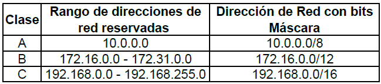

Direcciones IP Reservadas
No todas las direcciones comprendidas entre la 0.0.0.0 y la 223.255.255.255 son válidas para un host: algunas de ellas tienen significados especiales. Las principales direcciones especiales se resumen en la siguiente tabla. Su interpretación depende del host desde el que se utilicen.
Bits de red
Bits de host
Significado
Ejemplo
todos 0
Mi propio host
0.0.0.0
todos 0
host
Host indicado dentro de mi red
0.0.0.10
Red
todos 0
Red indicada
192.168.1.0
todos 1
Difusión a mi red
255.255.255.255
Red
todos 1
Difusión a la red indicada
192.168.1.255
127
cualquier valor válido de host
Loopback (mi propio host)
127.0.0.1
Difusión o broadcasting es el envío de un mensaje a todos los ordenadores que se encuentran en una red. La dirección de loopback (normalmente 127.0.0.1) se utiliza para comprobar que los protocolos TCP/IP están correctamente instalados en nuestro propio ordenador. Lo veremos más adelante, al estudiar el comando PING.
0.0.0.0 Se usa por las estaciones cuando están siendo arrancadas.
127.0.0.1 se reserva para especificar la estación actual.
Además para cada clase de red se establecen una numeración reservada. Esta numeración se utiliza, generalmente, en las redes locales. Las direcciones reservadas son:
